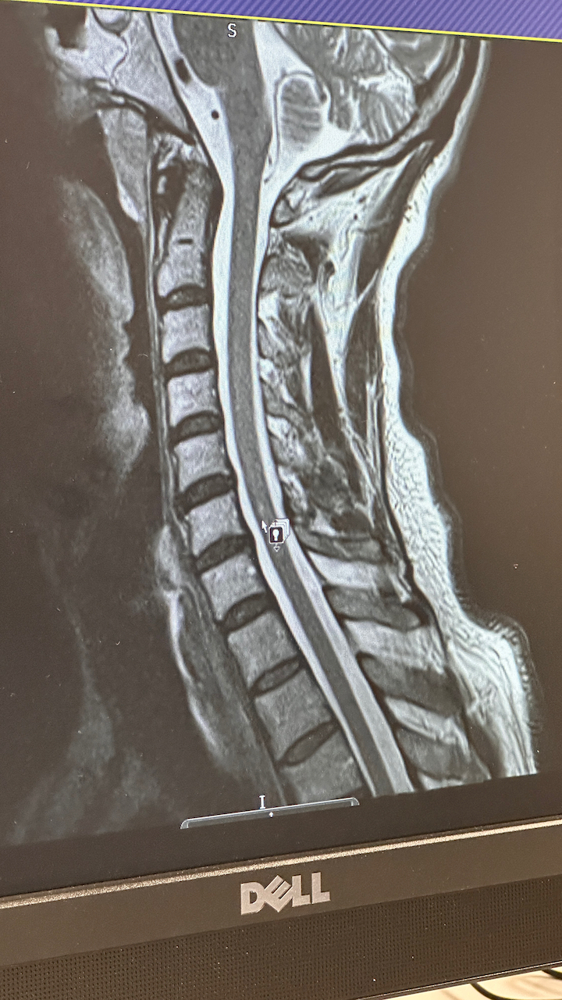

1.5T MRI Findings Report
Date: July 2025
Findings from MRI Imaging
1. Cervical Spinal Cord Lesion (C5/6)
The following image demonstrates a hyperintense signal within the cervical spinal cord at the C5/6 level. This is consistent with inflammation or previous myelitis, as interpreted by the consulting neurologist in the July 2025 letter.
2. Right Cerebellar Lesion
This axial T2-weighted MRI brain scan shows a signal abnormality in the right cerebellar hemisphere. The radiological impression and clinical correlation suggest a subacute infarct (stroke), which may explain coordination disturbances and left-sided sensory effects.